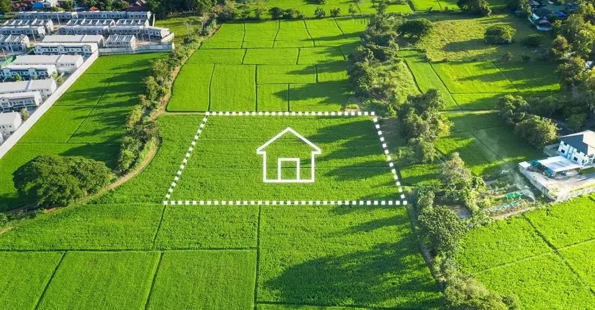
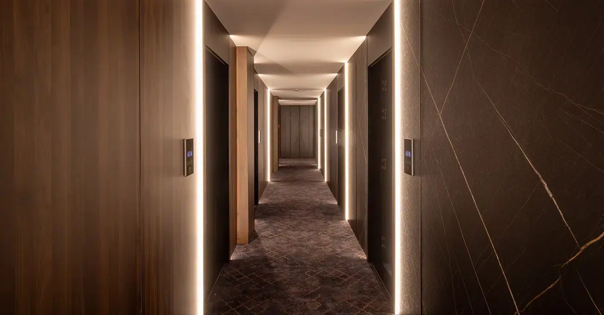
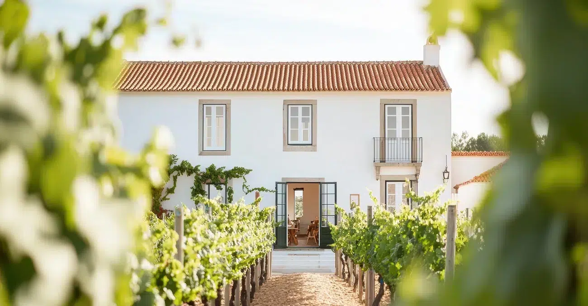
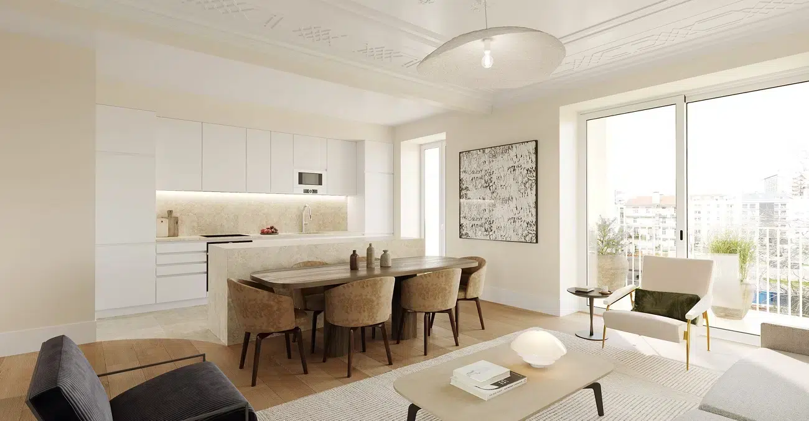
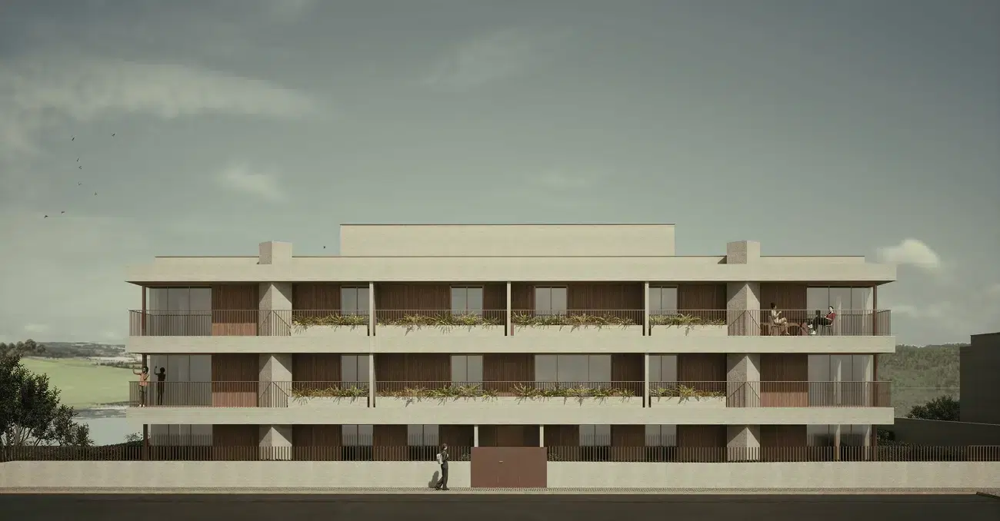

Guia Estrategico 2026: Como Criar Condominios de Habitacao Lucrativos
O mercado imobiliario em Portugal em 2026 exige mais do que apenas "construir e vender". Com a maturidade do setor e...

TIR e ROI na Promocao Imobiliaria: Como Calcular a Rentabilidade Real de um Projecto de Construcao Nova
Resumo Executivo — A TIR (Taxa Interna de Rentabilidade) considera o valor temporal do dinheiro, essencial para avaliar projectos imobiliarios...
O Novo RJUE: As 5 Alteracoes Estruturais e o Impacto na Promocao Imobiliaria
O novo RJUE redefine as regras do jogo para promotores e fundos de investimento imobiliario em Portugal...
As regras de licenciamento de obras mudaram em 2026: o que significa para si?
Construir, remodelar ou quaisquer outras obras em Portugal foram, durante decadas, sinonimos de processos morosos...

Quer criar um empreendimento turistico? O guia para o seu investimento
Portugal e o 7.o destino mais visitado da Europa. Criar um empreendimento turistico e uma oportunidade de investimento estrategica...

Guia sobre o IVA 6% construcao 2026 Portugal: oportunidades e estrategias
O setor imobiliario nacional enfrenta um momento de viragem. Com as novas medidas aprovadas no ambito do Orcamento de Estado...
Quanto custa um projeto de arquitetura em Portugal? Honorarios e calculo 2025
Falar sobre o preco de um projeto de arquitetura e um tema central e gerador de duvidas tanto para clientes que...

LANDSCOPE: analise rapida para decisoes imobiliarias seguras
A analise tecnica rapida que da seguranca as suas decisoes imobiliarias. Num mercado cada vez mais competitivo...

As Principais Fases do Processo Imobiliario em 2025/26
Uma abordagem pratica e integrada por Tiago R. Correia Arquitectos. O processo imobiliario e, por natureza, complexo e multifacetado...
3 Tendencias que Estao a Redefinir o Mercado da Habitacao
O mercado da habitacao em Portugal atravessa um periodo de escassez estrutural. A procura por imoveis supera largamente a oferta...

O Que Sao Estabelecimentos Hoteleiros?
Conheca as bases legais, os tipos existentes e como a arquitectura pode valorizar o seu investimento hoteleiro...

Turismo em Espaco Rural: Muito Mais do que Casas no Campo
Uma perspectiva para arquitectos, investidores e promotores turisticos. Num contexto em que o turismo de massas tende a saturar...

Nova Lei dos Solos: construcao de habitacao em terrenos rusticos
Uma transformacao no Planeamento urbano e na Oferta de Habitacao. Com a recente alteracao ao Regime Juridico dos Instrumentos...

TIAGO R. CORREIA nos principais Meios de Comunicacao
Tiago R. Correia Arquitectos em Destaque nos Principais Meios de Comunicacao. E com grande satisfacao que partilhamos...
Quanto custa construir uma Casa?
Quanto custa construir uma Casa, e os factores que influenciam o custo final. Construir uma moradia unifamiliar e um dos maiores investimentos...
Estudo de Vulnerabilidade Sismica
Estudo de Avaliacao de Vulnerabilidade Sismica: Importancia e Aplicacao. A avaliacao sismica e fundamental para a seguranca estrutural...
Licenciamento ou Comunicacao Previa? Qual e o Procedimento Mais Adequado para a Sua Obra?
Quando se decide avancar com uma obra de construcao, ampliacao ou remodelacao em Portugal, e fundamental conhecer os procedimentos...
Porque e que os Fundos de Investimento devem Trabalhar com Arquitetos?
Os fundos de investimento imobiliario desempenham um papel fundamental no desenvolvimento urbano e na valorizacao de activos...

Quanto Custa um Servico de Arquitetura? E as Suas Vantagens
Contratar um arquiteto pode ser um passo fundamental para garantir que o seu projeto de construcao ou remodelacao e bem-sucedido...
Antes de Comprar um Terreno: Os Principais Passos a Seguir
Comprar um terreno e um passo importante para quem pretende construir uma casa ou realizar um investimento imobiliario estrategico...

SIMPLEX Urbanistico . Decreto-Lei 10/2024
O Decreto-Lei n.o 10/2024, de 8 de janeiro, insere-se no ambito do Simplex Urbanistico, simplificando o licenciamento de obras...
Nenhum artigo encontrado nesta categoria.